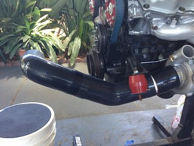
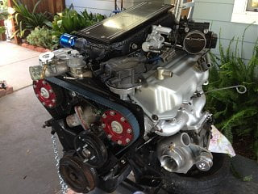
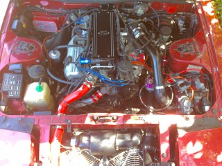

-
Has anyone tried an offset coupler to clear the motor mount when building an intake? Something like this:
http://www.hps-siliconehoses.com/hps…et-center.html
was hoping i could feed off of previous experience before i drop $26 on one. My fiero intake tube doesnt work with my bigger turbo.Last edited by 707Redz31; 07-01-2017, 09:24 PM. -
Well i bought one. Guess ill update this when i try and build the new intake. -
I'd be interested to see if it works. I don't think it would clear a stock mount but I have billet aluminum motor mounts so I'd want one if it works. Please post pics when you get it -
No problem will do. I agree with it not working for stockers. I didn't mention that, i do have revshift hard poly mounts. -
Yeah, that's what i figured. The stock mounts are massive. Do you have a stock t3 turbo?Originally posted by 707Redz31 View Post -
No, i have have basically a Precision 5431 now. Before I had a stock housing t3 bored to fit larger compressor and turbine wheels. -
On my old setup I was able to clean the motor mount using a 90 degree elbow. It was 4 inch to 3 inch, was sitting on the mount but not overly terrible. I don't think they will be enough to clear the mount but let us know what happens!Straya, +61 -
Im not necessarily meaning up over it either. Most likely to the left of the mount if you are facing the motor. On the stand with the motor mount attached its looking more and more like its going to be fine. But i am still without the coupler to really test. -
That's my current setup. I have a 3" 90° coupler on the turbo inlet to a 3" 90° aluminum elbow. I still have a stock T3 but I have an HX35 that's going in soon and it has a 4" inletOriginally posted by Timbo_021 View Post -
I had a fiero intake tube that worked great for a stock T3. It even has a spot for crank case vent line. Fit directly on our mafs as well. Gregmatic had a picture of it post years ago when he figured it out but was lost in the forum change over.
Someone posted a picture of something similar to what i was planning on the facebook page a couple days ago so i think it will be fine. They had a straight coupler and an offset aluminum pipe coming from a 60-1 turbo w/ 3in inlet. I get everything to try it out tomorrow so i should have a pics soon. -
-
Didn't work. 3in tubing is too big. If i bought an offset reducer it looks like it would work. Lucky for me i will be able to pull it off with a 3in 45' elbow. Here's one pic of it trying to pull the offset coupler off lol. But on the upside my "newish" motor is basically ready to drop in and is looking pretty good.  -
Final product! So my second plan worked awesome. I purchased and put together the intake consisting of: a 45â 76mm silicone elbow to a 76mm aluminum connector, 45â 76mm to 80mm silicone elbow, MAF, 80mm straight silicone coupler, 80mm straight aluminum connector, 90â 80mm to 76mm elbow, to an orion sealed air filter with snorkel. All couplers required some trimming to make the custom fit. Works great so far!

Copyright © 2006–. All rights reserved. Privacy Policy